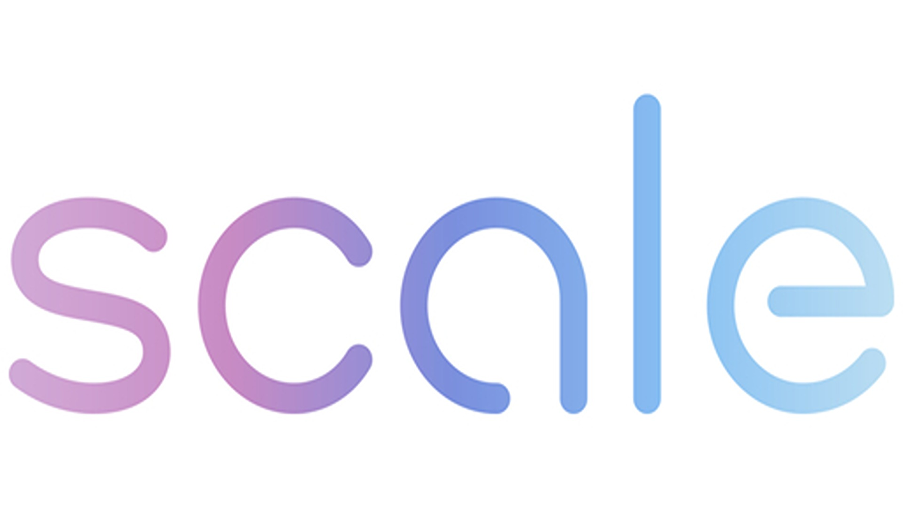

SWE AI Trainer
San Francisco
At Scale AI, I enhanced Gemini’s code generation accuracy to 70% by refining prompts iteratively and applying Software Development Life Cycle practices. I engineered over 100 optimized solutions for prompt-response evaluation across Python, C++, C, Java, and SQL, achieving a remarkable 15ms latency. Through in-depth analysis of more than 50 code-related prompts, I refined model training data for Reinforcement Learning with Human Feedback, improving response quality. Additionally, I constructed a chatbot response system using TensorFlow and PyTorch, achieving 95% response accuracy. My work extended to developing diverse coding solutions across multiple languages, leveraging manual memory management, pointer arithmetic, system programming, and p-threads, ultimately achieving an 85% response accuracy rate.
.jpeg)
Research Software Engineer
University of California Santa Cruz
In my research on LLM and ML security, I focus on mitigating inversion attacks by configuring advanced cryptographic techniques. Beyond traditional differential privacy, I develop protective methods such as gradient clipping and noise addition to enhance model security. I build Python-based tools to detect and address AI vulnerabilities, reducing data leaks and prompt injections by 90%. Additionally, I integrate oblivious RAM (ORAM) techniques in C++ to securely store and query a Retrieval-Augmented Generation (RAG) model, preventing data leakage while maintaining a low 10ms overhead. Through this work, I aim to push the boundaries of AI security and ensure robust protection against emerging threats.
Teaching Assistance
University of California Santa Cruz
As a Teaching Assistant, I have had the opportunity to instruct over 1,000 students in Data Structures & Algorithms using C/C++, helping many secure internships through hands-on mentorship. Managing a team of 15+ teaching staff, I delegate tasks effectively, provide mentorship, and optimize grading workflows to ensure accuracy and efficiency. To enhance the evaluation process, I deploy automated testing scripts using Bash, allowing for thorough assessment of student code across unit, functional, and integration tests—achieving 100% coverage with Valgrind and custom tools. Additionally, I conduct 20 labs each quarter, dedicating over 80 hours to strengthening students' problem-solving, programming, and debugging skills using GDB, ensuring they gain the technical expertise needed to succeed.
Mentee
Pasatiempo Golf Course
Project at a local golf club, applying hardware and networking skills to relocate the networking systems to an efficient environment. Made new Ethernet CAT5/6 cables appropriate to the new adjustments for the devices used all over the golf course.
This initiative not only improved network performance but also demonstrated my ability to seamlessly integrate technology into real-world scenarios, enhancing operational efficiency across the golf course's infrastructure.